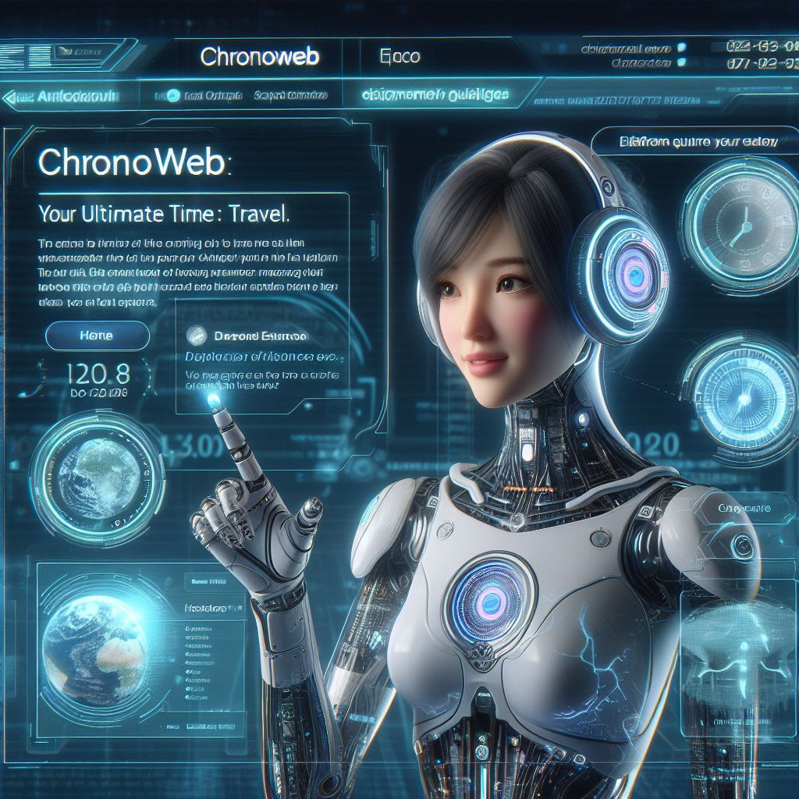

Web Skills

Chronodynamics

- Designed and developed a cutting-edge chronodynamics website focusing on the latest advancements in temporal physics and time manipulation technologies.
- Worked closely with chronodynamic scientists and researchers to understand complex concepts and translate them into visually engaging and informative website content.
- Implemented responsive design techniques to ensure seamless user experience across various devices, including desktops, tablets, and smartphones.
- Utilized HTML5, CSS3, and JavaScript to create interactive features such as timelines, animations, and simulations to demonstrate chronodynamic principles.
- Optimized website performance and accessibility through efficient coding practices and adherence to web standards.
- Integrated multimedia elements such as videos, infographics, and virtual reality experiences to enhance user engagement and comprehension of chronodynamic theories.
- Regularly updated the website with the latest research findings, breakthroughs, and news in the field of chronodynamics to keep content relevant and informative.
- Monitored website analytics and user feedback to identify areas for improvement and implemented enhancements to optimize user satisfaction and retention.